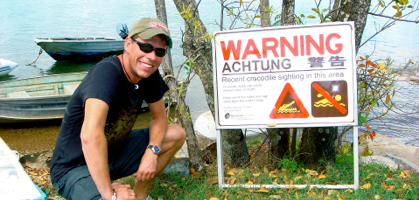
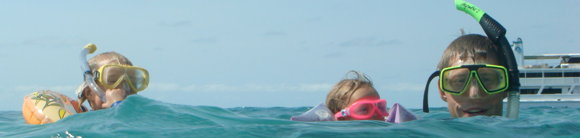
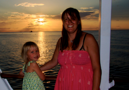

Great Barrier Reef

En dag i kaptajn Cooks tegn
lørdag den 24. november 2007

Ved 7 tiden om morgenen bliver der endelig stille. men kun i få minutter, for så annonceres det at vi nu er fremme ved Cook Town og at morgenmaden er klar. Vi spiser og gør os parate til en byvandring i hvad der skal vise sig at være noget af en flække. Der er ganske meget cowboyfilm over Cook town, og det viser sig da også at der for nylig har været en shootout duel midt på hovedgaden mellem to brødre, der var blevet uvenner, og den ene blev simpelthen skudt på bedste westernmaner...
Vi fornemmer, at nu er vi virkelig langt væk hjemmefra. Det er stegende hedt og de 2 timer vi har går hurtigt.
Vi sejler videre kl. 10 og lander ud for en meget smuk sandbanke kaldet Two isles, kl. 13. Som alt andet på turen er her totalfredet. Vi sejles ind på den øde strand, og hygger os nogle timer, men ture i glasbundsbåden over de utrolig smukke koraller, og en masse snorkling. Viola er efterhånden ganske ferm til det.

Bagefter sætter vi kursen mod et af turens højdepunkter: Lizard Island - det nordligste punkt på vores sejltur. På vejen hygger vi os på øverste dæk med champagne og badning i bådens spa - det er ren luksus og et rigtigt driverliv.

Ved 18 tiden ankommer vi til Watson´s Bay, hvor saglig kaptajn Cook lagde til, da han ikke rigtig kunne finde ud af at komme videre. Her er virkelig smukt og vi nyder en dejlig solnedgang.
I morgen kl. 6 sendes første dykkerteam afsted, så vi tørner i køjs rimelig tidligt igen.
Cook Town er Croc territory, og man skal tage sig i agt, da de simpelthen kravler op nede ved havnen.